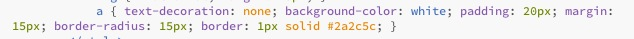

Teaching Point:
Today we will learn how to use CSS to decorate our links.
Making our links look like buttons
When you make a link in HTML, if you don't use a CSS style, the link will automatically look a certain way. It will be blue, and it will be underlines. We can use CSS Styles to make our links look nicer, and make them look more like buttons.
Here are some properties to play with using the a tag:
- To make the underline go away set text-decoration to none.
- to give the button a background color use background-color
- To give the button a border set border to 1px solid and whatever color you want. Feel free to use a bigger or smaller border size.
- To make the button have more room use the padding property. Set it to anywhere between less than 1 to 50px.
- To make more space between the buttons, use the margin property.
Here is an example
Today's Assignment
Use the border, margin, padding, and background color properties on your a tag to make your links look like buttons.
Back to School Portal